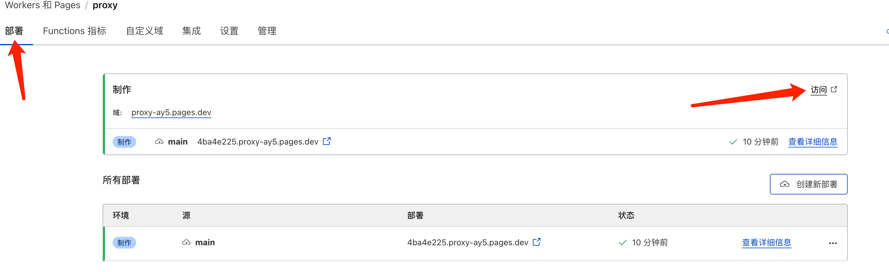

通过cloudflare搭建免费的梯子
今天给大家分享一个梯子的搭建方法，不用花钱订阅，不用购买服务器，不需要购买域名，完全免费的方案，速度非常之快，而且可以访问chatgpt等网站。
先看下速度和节点
注册cloudflare
- 注册账号，https://dash.cloudflare.com/login ，这个不用多说了，输入邮件、密码注册即可，然后验证一下邮件地址就行了。
部署代理pages
- 打开Workers和Pages这个栏目，然后点击上面的创建按钮，即可，右侧的请求数量是可以看到你今天的请求量，最多 每天10W次 的数量，不过放心，很难用到10w的。
- 点击创建后，标签栏目上选择Pages，然后点击上传资产。
- 接下来就是创建项目，填写项目名称，可以随意起，填写完成后，点击创建项目。
- 创建完项目后，即可上传项目资产，我们先下载一个worker.zip包， https://raw.githubusercontent.com/cmliu/edgetunnel/main/worker.zip ，然后选择上传压缩文件。
- 点击部署站点就ok了，随后点击继续处理项目的按钮。
- 会跳到项目的部署栏目，选择设置栏目，添加环境变量，名称填写为 UUID ，切记一定是大写的，然后可以在 google、baidu 找生成UUID的工具，类似 https://www.gongjuwa.com/uuid/ ，复制到值里面，一定记得把前后的空格去掉，加密不加密都可以，点击保存即可，UUID找地方存一下，后面还有用。
- 我们回到部署栏目，点击右侧访问链接。

即可看到浏览器打开新的页面，里面出现了数据信息，就代表你自己的梯子其实已经完成了80%，cloudflare分配给的地址就是我们的入口。
- 我们刚才保存的UUID，添加在分配给的地址之后在访问，会发现显示Not found，接着我们再次部署刚才下载好的worker.zip文件夹。
- 我们再次回到项目下的部署，点击创建新部署按钮，
选择从计算机中选择，选择上传压缩文件，还是选择上面下载的worker.zip包，完成后，点击保存并部署，这次你已经完成了99%了。
- 我们再次访问项目分配的域名+UUID后，发现能够出现流量的代理地址了。

可以看到有很多订阅地址，也支持Base64、clash-meta、sing-box等订阅格式，同时页面上也显示了是使用Vless协议，所以我们还需要支持Vless协议的代理软件才行。
使用工具
- 工具推荐V2rayU， 下载地址：
Windows: https://github.com/2dust/v2rayN/releases
Mac: https://github.com/yanue/V2rayU/releases
Assets下，可以根据自身电脑类型选择下载并安装。 - 以我自己的mac为例，点击V2rayU，选择订阅设置，地址填写：项目分配的域名+UUID ，备注随意填写，添加更新后即可。
然后关闭订阅设置，点开服务器列表，即可看到上面地球图标+上面填写的订阅名称，里面有50个订阅地址，选择一个延迟较低的使用就行。
结尾
上面的proxy地址我已经删了，大家使用自己的地址，目前稳定用了一段时间了，每天开发加浏览页面，最高一次也只是达到4w的请求次数，距离10w还是有一定的距离的，大家快去用吧。
如果觉得我的文章对您有用，请随意打赏。


感谢您的阅读，本文由 李经纶 版权所有。如若转载，请注明出处：李经纶个人博客（https://lijinglun.com/2024/09/06/通过cloudflare搭建免费的梯子/）